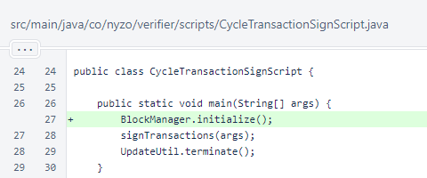

Nyzo version 597 (commit on GitHub) adds BlockManager initialization to the CycleTransactionSignScript.
This version only affects CycleTransactionSignScript.
In version 588, initialization of BlockManager was changed from a static block in the class to a requirement that the BlockManager.initialize() method be called manually. The release notes stated:
Also, the static block has been removed. This is a significant, far-reaching change. This change has been fully tested for the verifier, sentinel, and client, but it may still have some unintended effects on scripts. This will continue to be reviewed.
One of the affected scripts is the CycleTransactionSignScript. In this script, BlockManager is now explicitly initialized.
